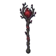

ผู้ประกาศต้นไม้
มอนธาตุมืด Lv 88–96
เจอที่
| แมพ | โซน | Lv | ภูมิภาค |
|---|---|---|---|
| ขอบป่าต้นไม้มืด | 88–96 | ป่ากองไฟ | |
| ขอบป่าต้นไม้มืด | รากยักษ์ขอบป่า | 94–96 | ป่ากองไฟ |
ค่าสถานะตามเลเวล
| Lv | HP | ATK | DEF | MDEF | EXP | Job |
|---|---|---|---|---|---|---|
| 88 | 65,919 | 125–187 | 25 | 34 | 116 | 87 |
| 92 | 74,750 | 133–199 | 26 | 36 | 121 | 91 |
| 96 | 83,680 | 143–214 | 27 | 37 | 125 | 94 |
ตีด้วยธาตุไหนดี
แรงขึ้น: ศักดิ์สิทธิ์ ×1.25
เบาลง: วิญญาณ ×0.75 พิษ ×0.5 มืด ×0 อมตะ ×0
วัตถุดิบที่ดรอป
| ของ | โอกาส | |
|---|---|---|
| ปมอกต้นไม้ | 55% | 1 ชิ้น (15% ได้ 2) |
อุปกรณ์ที่ดรอป (1)
| ของ | โอกาส |
|---|---|
 คทาผู้ประกาศต้นไม้ | 0.06% |
สกิล
ม่านเวท (Lv 25+) · ม่านเวท (Lv 60+) · วาร์ป (Lv 60+)